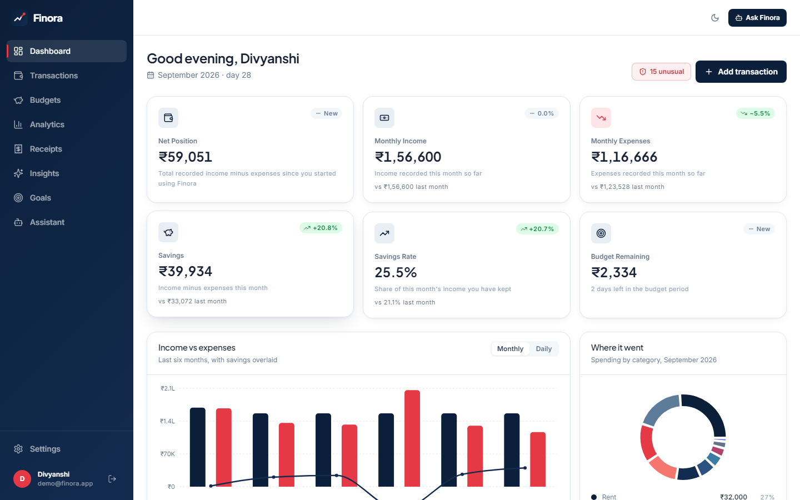
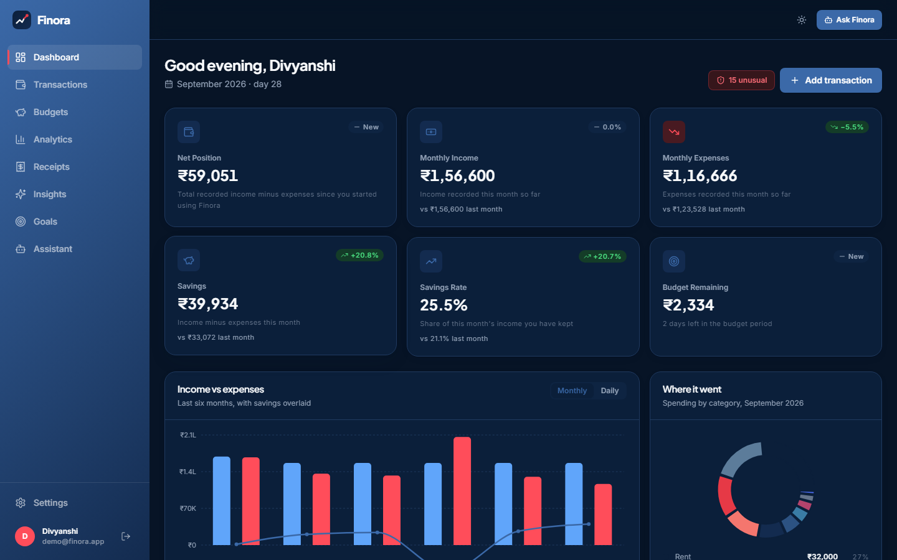

A React SPA with no secrets
16 pages built on one api/client.ts. It's the only place that calls fetch. It attaches the JWT, applies a 30-second timeout, parses FastAPI's field errors and routes any 401 back to login.
AI-Powered Personal Finance Platform
A finance platform where the backend computes every number and the AI is only allowed to explain it.
It categorises noisy bank narrations

get_top_merchants() queried PostgreSQL before the answer was writtenCounted from the repository. These are size figures, not usage or business metrics.
A Playwright script signs in as the seeded demo user and captures each view. Nothing is mocked or retouched. Drag, swipe, use the arrow keys, or click a side slide to bring it forward.
Hover over a card (or tap it on a phone) to flip from the problem to the part of Finora that addresses it. Every answer corresponds to real code.
Bank narrations look like this, and someone has to turn them into "Food":
UPI/SWGGY/428391/Food orderHover to see the fixWord + character TF-IDF → Logistic Regression suggests a category while the user types, with confidence and the tokens behind it. It applies automatically only at ≥ 45% confidence.
Monthly totals don't show which category or merchant caused a change, or whether a partial month is being compared with a full one.
Hover to see the fixEqual-length period comparison and 8 deterministic detectors. A change is reported only when it is both ≥ 18% and ≥ ₹500.
Fixed rules like "flag anything over ₹5,000" don't fit anyone's real spending.
Hover to see the fixMedian/MAD z-score per category plus an Isolation Forest, each flag with a reason a person can read.
People want to know what next month is likely to look like, and how sure the estimate is.
Hover to see the fixThe model depends on how much history exists, with an 80% interval. There is no forecast below 3 months, and the app says why.
Merchant, date, the CGST/SGST split and the total all have to be retyped.
Hover to see the fixOpenCV → Tesseract → rule-based parser with per-field confidence. Nothing reaches the ledger until the user confirms.
Ask a language model about your money and it will give you a plausible number, right or wrong.
Hover to see the fixTyped tools query PostgreSQL and Python does the arithmetic. The LLM only rephrases. With no API key, the answers contain the same numbers.
Remove the AI provider and the product still works. Every figure stays the same and only the prose gets plainer, and the UI labels which mode produced each answer.
user_idScroll through the steps and the layer each one describes lights up in the diagram. ML, OCR and the LLM are optional: each reports whether it's available, and the API starts without any of them.
16 pages built on one api/client.ts. It's the only place that calls fetch. It attaches the JWT, applies a 30-second timeout, parses FastAPI's field errors and routes any 401 back to login.
The browser always calls a relative /api, so there's one origin and no CORS preflight. nginx also sets the CSP and security headers.
Pydantic validates each request, and get_current_user turns the JWT into a user. Middleware adds X-Request-ID and timing headers. Routers hold no business rules.
14 services hold the logic. Every repository helper takes a user_id, so there's no query that can return another user's rows, and cross-user access returns 404.
These are pure computation modules that never touch the database directly. The LLM, shown dashed, is called only if AI_API_KEY is set, and it receives facts only.
13 tables and Numeric(14,2) for money. Derived values are computed on read, and Alembic migrations are checked in CI by applying them up, down and up again.
Every card is implemented and checked against the source. The mono chips are real constants from the code.
JWT (HS256), bcrypt, timing-equalised login, hashed single-use reset tokens.
CRUD, bulk delete, categories, and search with a whitelisted sort order.
Live preview, alternatives, token explanations and a correction loop.
OpenCV, Tesseract and a parser with per-field confidence.
A robust z-score and an Isolation Forest, with the reason stated on every flag.
Weighted moving average up to Holt-Winters, depending on how much history exists.
A six-component weighted formula. Missing parts are left out, not guessed.
8 detectors, de-duplicated by fingerprint, isolated from each other's failures.
13 typed tools, rule-based routing and a deterministic fallback.
Six-month history minus the highest month, with a buffer and rounding.
A contribution ledger and a completion date projected from real saving pace.
A shared Recharts kit and a designed dark theme. Forecasts are drawn dashed.
Keep scrolling and the pipeline moves sideways. Training and serving import the same preprocessing module, so what the model learned is exactly what it's asked to predict.
Merchant, description, payment method and transaction type, exactly as the bank wrote them.
NFKD accent stripping and lowercasing. Card numbers, amounts, dates and 6+ digit reference numbers are masked, and narration stop tokens are dropped.
The merchant is repeated twice to up-weight the strongest signal. Payment method and type become prefixed tokens.
Word 1–2 grams for merchants and phrases, plus char_wb 3–5 grams so misspellings like SWGGY and AMAZONIN still match.
Multinomial, C=4, balanced classes, 12 categories. It trains in seconds on CPU, so the Docker image trains it during the build.
For a linear model, each token's contribution is tfidf × coefficient, so the UI can show which words drove the prediction.
At ≥ 0.45 the category is applied, and at ≥ 0.70 it's marked high confidence. Anything lower is only a suggestion, because a wrong category corrupts every chart after it.
Overrides set was_corrected in ml_predictions. They're exported (text only), used in retraining, and loaded without a restart.
These are real outputs of python -m ml.predict, recorded in the project README. Switch between them to see the confidence gate in action.
ml_predictions.From ml.train: a stratified 80/20 split, then a refit on all data. CI checks that the 1,848-row dataset regenerates byte-for-byte.
| Acc | Prec | Recall | F1 | 5-fold F1 |
|---|---|---|---|---|
| 0.957 | 0.962 | 0.962 | 0.961 | 0.956 |
A real flag from the demo data, drawn on a log scale. The blue band is the user's usual Shopping range and the black line is its median.
Fitting seasonality to five data points produces a confident-looking line with no information in it, so the model depends on how many months exist.
It uses an 80% interval widening as σ·√h, because a 95% band on about 12 monthly points is too wide to be useful.
Hover a segment to widen it. A 20% savings rate scores 85, and six months of expenses is the emergency-fund target. Components that can't be measured are left out and the remaining weights renormalised.
The illustration shows what the parser extracts and how confident it is in each field. Split GST lines are summed, and a field it can't find comes back empty with a warning instead of a guess.
The receipt is an illustration of the parser's rules, not an app capture. The confidence labels summarise how each field is found. A regression test covers a real bug where 1923.60 was parsed as 192 + 3.60.
This is a real capture from a machine without Tesseract installed. The app doesn't crash or pretend to scan. It explains what's missing, shows how to install it, and lets the user enter the receipt manually. GET /api/receipts/ocr-status reports the same state. The Docker image ships with Tesseract installed.
The conversation below replays a real answer from the app's screenshot, running with no API key. The tool calls happen first, and the answer is built only from what they return.
✓ get_top_merchants()✓ get_category_spending()✓ get_monthly_spending()Ordered regex rules pick at most 4 of 13 tools. The LLM never chooses what data to fetch, so a prompt injection can't request arbitrary data.
Each tool returns structured data plus a readable summary, always scoped to the signed-in user.
"How much can I save if I cut shopping by 20%?" The percentage is parsed from the question and get_savings_simulation computes the answer.
If a key is set, the LLM gets a verified JSON block of facts and is told never to add a number. With no key or on any error, the tool summaries are joined into the answer instead, with the same figures.
Each answer comes back with its tool trace, the facts and generation_mode. A test checks that a broken provider still returns correct numbers.
Drag the handle. Tailwind colours are defined as CSS variables, so the dark theme swaps the palette itself rather than inverting it: navy becomes the surface and the red lightens to stay readable.

LightDarkEvery user-owned table cascades from users, and primary keys are UUID4 strings, so IDs in URLs can't be guessed. Budget spend is never stored; it's recomputed on every read.
backend/app/routers, all under /api · OpenAPI at /api/docs422 with field errors · 503 on DB errors · 404 for other users' dataMost protections come from how the code is organised, so no individual route has to remember them. The known gaps are listed below the cards.
bcrypt with cost 12, plus SHA-256 pre-hashing for passwords longer than 72 bytes. A malformed hash fails closed instead of erroring.
Signature, expiry and type == "access" are checked on every request. Tests confirm forged tokens are rejected.
Login takes the same time for unknown emails, and forgot-password gives the same response either way.
Every query needs a user_id, and other users' data returns 404. Ten tests cover this.
Pydantic on every endpoint, a whitelisted ORDER BY and parameterised queries throughout.
An 8 MB limit, a MIME allow-list, magic-byte checks and server-generated filenames.
An explicit list of allowed origins (never *). nginx adds a CSP, nosniff and X-Frame-Options: DENY.
Secrets live only in environment variables. Docker Compose refuses to start without JWT_SECRET, and the frontend holds none.
Passwords, tokens and keys are redacted from logs, SQL errors never reach the client, and the container runs as a non-root user.
/auth/login or /ai/chat.localStorage. The CSP reduces XSS risk, but an httpOnly cookie would be safer.Locally everything runs in Docker Compose. In production the React build is served by Vercel at finora-ai-personal-finance.vercel.app, and the API and database run on Render.
calls a relative /api
node:22 build → static site · CSP · gzip · proxy
Tesseract installed · model trained during the build · non-root · waits for the DB → runs migrations → seeds → starts uvicorn
pg_isready health check · named volumes
HTTPS
Docker · finora-backend-kihu.onrender.com · health check on /api/health · Alembic migrations on boot · JWT_SECRET generated by Render
DATABASE_URL injected, then rewritten for the psycopg 3 driver
vercel.json). The deployed bundle calls the Render API directly at finora-backend-kihu.onrender.com/api, set at build time through VITE_API_URL, so the Vercel origin must be listed in the backend's CORS_ORIGINS. render.yaml also defines an nginx frontend on Render.Postgres 16 · Alembic up/down/up · pytest · seed
dataset reproducibility · train + CV · evaluate · smoke test
typecheck · Vitest · build
both images · tesseract --version
Ruff · ESLint, zero warnings allowed
Drag, swipe or use the arrows. Each challenge is traced to code, a test or a commit, and one is still open.
backend/, so the two could normalise text differently without anyone noticing.ml package, PYTHONPATH=/srv in Docker, and a PIPELINE_VERSION check when the model loads.tsc -b failed because the Vite config uses node:path without Node's type definitions installed.@types/node. Lesson: run the same build locally that the host runs.proxy_pass at Render means local Compose now proxies to production.envsubst and set proxy_ssl_server_name on.The backend tests run against PostgreSQL in CI. There are no load tests yet, so no latency or throughput numbers are claimed.
The biggest shift was treating the model as one component among many. Most of the engineering went into the code around it.
With one layer per concern, data isolation is enforced in one place instead of in every route.
Shared preprocessing, versioned artefacts and a confidence policy mattered more than which classifier I picked.
Action sub-resources, one error shape and explicit "insufficient data" responses made the frontend simpler.
Decimal for money, derived values computed on read, and indexes designed around the real queries.
Preprocessing drives most of the accuracy. For the remaining errors, show the confidence and ask the user.
A setup that works in Compose still needs changes for a managed host. Config should be templated, not edited in place.
Protections built into the structure beat checks added route by route, and the gaps should be written down.
An assistant that stays correct with the model switched off is one people can trust.
Everything after the first card is future work and not yet implemented. The line fills in as you scroll.
Auth, transactions, ML categorisation with a correction loop, OCR, anomalies, forecasts, health score, insights, the grounded assistant, Docker, CI and a Render blueprint.
A labelled benchmark of real (consented, anonymised) narrations kept separate from the synthetic training data, plus a promotion gate so a retrained model can't be released if it's worse.
Layout-aware line-item parsing, a merchant dictionary, multilingual Tesseract packs and a labelled receipt benchmark.
A job queue for OCR, anomaly scans, insights and retraining, and object storage for receipts.
Track acceptance rate, confidence drift and category drift from the data ml_predictions already records.
Rate limiting, refresh tokens, httpOnly sessions, checking every number in LLM replies, OpenTelemetry, and CI/CD with preview environments.
Only claims that can be checked: counts from the source, and no user, revenue or production-accuracy figures.
Finora is an AI-assisted personal finance platform that categorises transactions with an explainable ML model, flags unusual spending, forecasts cash flow, scores financial health and scans receipts. The backend computes every figure; a language model only rephrases verified results. Live: https://finora-ai-personal-finance.vercel.app/
Finora is a portfolio project built to production standards: layered services, reversible migrations, explainable ML and an AI layer that isn't trusted to supply facts.